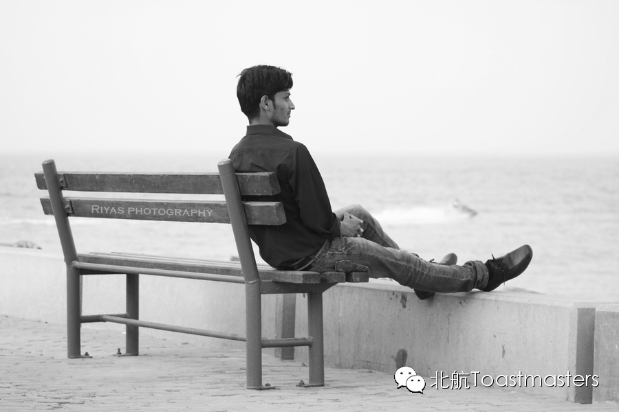

Single or Double
Time: 19:30-21:30, Friday, Dec. 5th
Venue: Room A209, New Main Building, Beihang University
Toastmaster: Jane
Table Topic Master: Sophie
Yay！Beihang Toastmasters is coming again! Tonight we will talk about the awkwardness when we just step into work and how to face it and conquer it eventually. So have you ever feel not sure what you are dealing with at all when doing your first intership? Have you ever made mistakes when updated with your boss? Or have you ever have no idea what to talk about with your coworkers? Come here and join us in the 79th Beihang Toastmasters to share your experience and solutions with us! Our Table Topic Master, smart and pretty Lucia, will put on an amazing show waiting for you! Move your butt already!!
(ps:strongly welcome the taller boy to our meeting cause we can go to eat steat with a good discount )
Prepared Speech
Clear Goal
CC2 Junyar
We are both on the way to grouth. We may have a lot of choise on this way. Have you ever hesitated to choice it. And maybe the most difficult part is how you choice it.and once you choice a way, your goal will very clear. And the only thing you can do is just do it. Junya is a smart,confidence girl. lets listen for her clear goal.
Prepared Speech
Being Alone
CC9 Keven

Keven is a person who likes to get up earlier, and doing exercise everyday. Wow,what a health life style is. And also he is a good thinker, he know what he want. Being alone maybe is his life style now. How to being alone, and what would he do when he alone. I am also curious about it. Let's look forward to kevens' speech
Map
Our meeting venue is RoomA209, New Main Building, Beihang University (北航新主楼A209房间). Click here to see large map. And you can phone to Deron for help.
TEL: 180-0125-3933
See you in the meeting!

https://mp.weixin.qq.com/s/dIRONs31dX8R39Rjrp48gw
本页为抢救式本地归档，图文已永久保存。